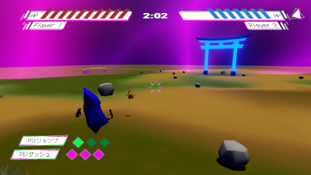

Considering that this game project would be exhibited at Tokyo Game Show, we started by asking ourselves, "What do we need to create a game that customers can enjoy as quickly as possible when they come to our booth?"
The main points we took into consideration were:
Thinking about games like Unreal Tournament, we decided on a low-poly 3D style for the visuals. We initially considered both First Person Shooter (FPS) and Third Person Shooter (TPS) and eventually decided on TPS. However, we didn’t want to make a normal shooter with guns since it’s very common, and it’s difficult to make guns that feel responsive and satisfying to use. So we decided on the theme of psychic powers, in which you’d throw various objects at the opponent instead. Thus, PSYCHIC SHOWDOWN was born.
After the core game was complete, we enhanced the visuals by adding character animations, effects, new models, and shaders, which resulted in the look seen in the image above. However, beyond just the visuals, we also worked on implementing more technically challenging features like online multiplayer, random map generation, and an item placement algorithm.